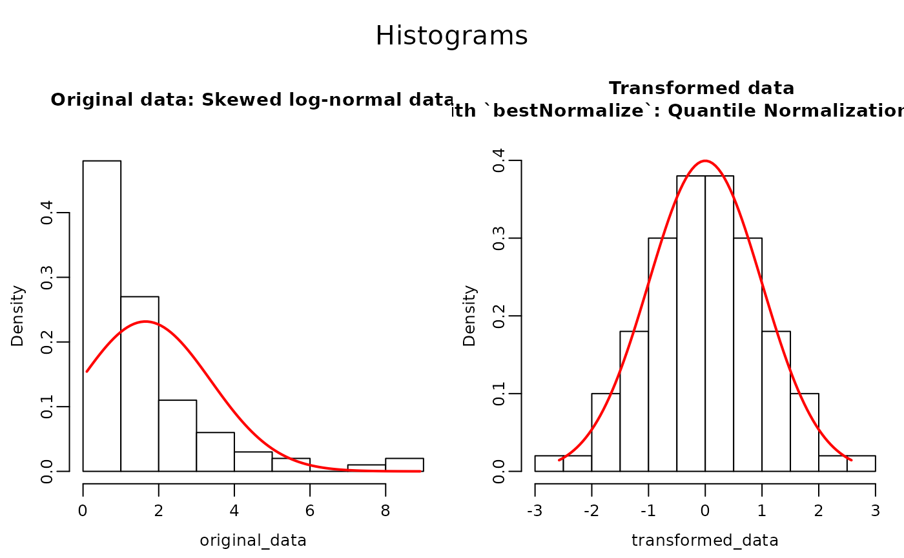
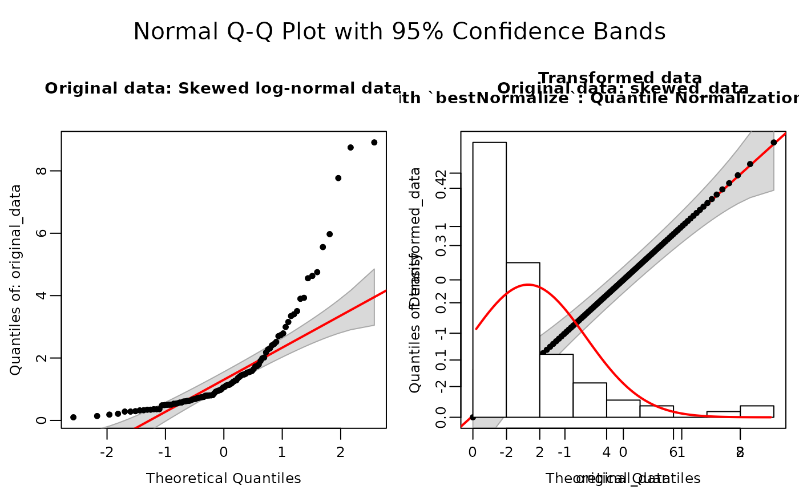
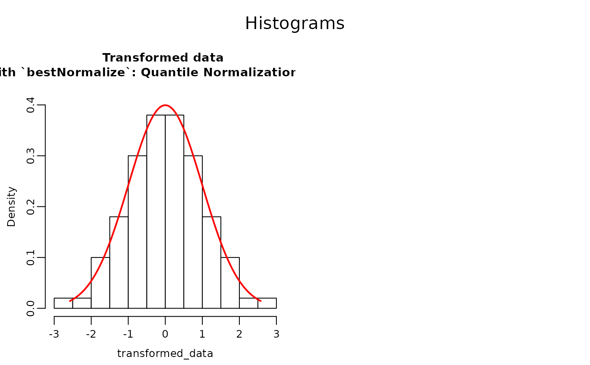
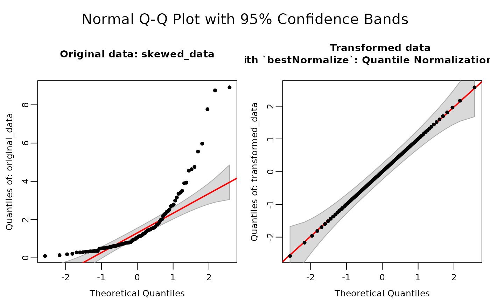

f_bestNormalize: Automated Data Normalization with bestNormalize
f_bestNormalize.RdApplies optimal normalization transformations using 'bestNormalize', provides diagnostic checks, and generates comprehensive reports.
Usage
f_bestNormalize(
data,
alpha = 0.05,
plots = FALSE,
data_name = NULL,
output_type = "default",
save_as = NULL,
save_in_wdir = FALSE,
close_generated_files = FALSE,
open_generated_files = interactive(),
...
)Arguments
- data
Numeric vector or single-column data frame.
- alpha
Numeric. Significance level for normality tests (default =
0.05).- plots
Logical. If
TRUE, plots Q-Q plots and Histograms of the original and transformed data. Default isFALSE.- data_name
A character string to manually set the name of the data for plot axis and reporting. Default extracts name from input object.
data.- output_type
Character string specifying the output format. Default is
"default"."default": Returns the object and lets R decide whether to print; auto-prints if unassigned, silent if assigned to a variable. Useprint(result)orplot(result)to display the returned object."console": Forces immediate printing to the console regardless of object assignment."pdf","word","excel": Saves results to a file of the corresponding format. Seesave_as,save_in_wdir, andopen_generated_filesfor file path and opening behavior."rmd": Stores the raw markdown string inside the returned object for use in R Markdown documents.
- save_as
Character string specifying the output file path (without extension). If a full path is provided, output is saved to that location. If only a filename is given, the file is saved in
tempdir(). If only a directory is specified (providing an existing directory with trailing slash), the file is named "data_name_transformed" in that directory. If an extension is provided the output format specified with option "output_type" will be overruled. Defaults tofile.path(tempdir(), "data_name_transformed.pdf").- save_in_wdir
Logical. If
TRUE, saves the file in the working directory. Default isFALSE, this avoid unintended changes to the global environment. Ifsave_aslocation is specifiedsave_in_wdiris overwritten bysave_as.- close_generated_files
Logical. Closes open Excel or Word (NOT pdf) files before writing, depending on the output format. Works on Windows (taskkill), macOS (pkill) and Linux (pkill/soffice). Default
FALSE. WARNING: Always save your work before using this option!!- open_generated_files
Logical. Whether to open the generated output files after creation. Defaults to
TRUEin an interactive R session andFALSEotherwise (e.g. in scripts or automated pipelines). Set toTRUEorFALSEto override this behaviour explicitly.- ...
Additional arguments passed to bestNormalize.
Value
Returns an object of class `f_bestNormalize` containing:
transformed_dataNormalized vector.bestNormalizeFull bestNormalize object from original package.data_nameName of the analyzed dataset.transformation_nameName of selected transformation.shapiro_originalShapiro-Wilk test results for original data.shapiro_transformedShapiro-Wilk test results for transformed data.norm_statsData frame of normality statistics for all methods.rmdRmd code if outputype = "rmd".
Also generates reports in 'Word', or 'pdf' files. When using output to console and plots = TRUE, the function prints QQ-plots, Histograms and a summary data transformation report. Includes print and plot methods for objects of class 'f_bestNormalize'.
Details
This is a wrapper around the 'bestNormalize' package. Providing a fancy output and the settings of 'bestNormalize' are tuned based on sample size n.
If n < 100, loo = TRUE, allow_orderNorm = FALSE and r doesn't matter as loo = TRUE.
If 100 <= n < 200, loo = FALSE, allow_orderNorm = TRUE and r = 50.
If n >= 200, loo = FALSE, allow_orderNorm = TRUE, r = 10. These setting can be overwritten by user options.
This function requires [Pandoc](https://github.com/jgm/pandoc/releases/tag) (version 1.12.3 or higher), a universal document converter.
Windows: Install Pandoc and ensure the installation folder
(e.g., "C:/Users/your_username/AppData/Local/Pandoc") is added to your system PATH.macOS: If using Homebrew, Pandoc is typically installed in "/usr/local/bin". Alternatively, download the .pkg installer and verify that the binary's location is in your PATH.
Linux: Install Pandoc through your distribution's package manager (commonly installed in "/usr/bin" or "/usr/local/bin") or manually, and ensure the directory containing Pandoc is in your PATH.
If Pandoc is not found, this function may not work as intended.
References
Peterson, C. (2025). bestNormalize: Flexibly calculate the best normalizing transformation for a vector. Available at: https://cran.r-project.org/package=bestNormalize
Author
Sander H. van Delden plantmind@proton.me
Examples
# \donttest{
# Use set.seed to keep the outcome of bestNormalize stable.
set.seed(123)
# Create some skewed data (e.g., using a log-normal distribution).
skewed_data <- rlnorm(100, meanlog = 0, sdlog = 1)
# Basic usage: transform and store the full result object.
result <- f_bestNormalize(skewed_data, data_name = "Skewed log-normal data")
# Print a summary of the transformation.
print(result)
#>
#> Data transformation of Skewed log-normal data using `bestNormalize`: Quantile Normalization (ORQ)
#> Original Data Shapiro-Wilk Test: W = 0.7302 p-value = 2.887e-12
#> Transformed Data Shapiro-Wilk Test: W = 0.9996 p-value = 1
#>
#> Below are all considered transformations: [Pearson P / df, lower => more normal] (n=100)
#> Transformation Normality_Stat
#> arcsinh(x) 2.324
#> Box-Cox 0.764
#> Center+scale 8.356
#> Double Reversed Log_b(x+a) 25.308
#> Exp(x) 102.684
#> Log-transform 0.660
#> Quantile Normalization (ORQ) 0.036
#> sqrt(x + a) 2.246
#> Yeo-Johnson 0.582
#>
#>
#> Check the normality plots, by using the plot() function or 'plots = TRUE' option
# Inspect normality statistics for all candidate transformations.
result$norm_stats
#> Transformation Normality_Stat
#> 1 arcsinh(x) 2.324
#> 2 Box-Cox 0.764
#> 3 Center+scale 8.356
#> 4 Double Reversed Log_b(x+a) 25.308
#> 5 Exp(x) 102.684
#> 6 Log-transform 0.660
#> 7 Quantile Normalization (ORQ) 0.036
#> 8 sqrt(x + a) 2.246
#> 9 Yeo-Johnson 0.582
# Plot histograms and QQ-plots for original vs. transformed data.
plot(result)

# Use plots = TRUE to auto-plot when output_type = "default" (default).
result2 <- f_bestNormalize(skewed_data, plots = TRUE)


# Extract only the transformed (data) vector directly.
transformed_data <- f_bestNormalize(skewed_data)$transformed_data
# data.frame input: column name is used as data_name automatically.
df <- data.frame(measurement = skewed_data)
result_df <- f_bestNormalize(df)
# Data with NAs: NAs are preserved at their original positions.
skewed_na <- skewed_data
skewed_na[c(5, 20)] <- NA
result_na <- f_bestNormalize(skewed_na)
# Access a specific alternative transformation (first check what is available).
names(result$bestNormalize$other_transforms)
#> [1] "arcsinh_x" "boxcox" "center_scale"
#> [4] "double_reverse_log" "exp_x" "log_x"
#> [7] "sqrt_x" "yeojohnson"
# Then extract the one you want, e.g.:
# result$bestNormalize$other_transforms$yeojohnson$x.t
# Force output to console (prints report + plots automatically).
f_bestNormalize(skewed_data, output_type = "console")
#>
#> Data transformation of skewed_data using `bestNormalize`: Quantile Normalization (ORQ)
#> Original Data Shapiro-Wilk Test: W = 0.7302 p-value = 2.887e-12
#> Transformed Data Shapiro-Wilk Test: W = 0.9996 p-value = 1
#>
#> Below are all considered transformations: [Pearson P / df, lower => more normal] (n=100)
#> Transformation Normality_Stat
#> arcsinh(x) 2.324
#> Box-Cox 0.764
#> Center+scale 8.356
#> Double Reversed Log_b(x+a) 25.308
#> Exp(x) 102.684
#> Log-transform 0.660
#> Quantile Normalization (ORQ) 0.036
#> sqrt(x + a) 2.246
#> Yeo-Johnson 0.582
#>
#>
#> Check the normality plots, by using the plot() function or 'plots = TRUE' option
 # Generate a PDF report saved to a custom path.
f_bestNormalize(skewed_data,
output_type = "pdf",
save_as = "my_report"
)
#> Saving output in: /tmp/RtmpG5HCTF/my_report.pdf
#> Warning: error in running command
#> ! sh: 1: pdflatex: not found
#> Error: LaTeX failed to compile /tmp/RtmpG5HCTF/my_report.tex. See https://yihui.org/tinytex/r/#debugging for debugging tips. See my_report.log for more info.
# Generate R Markdown output for use inside a .Rmd chunk
# (set chunk option results = 'asis').
rmd_result <- f_bestNormalize(skewed_data, output_type = "rmd")
cat(rmd_result$rmd)
#>
#>
#> ## Data transformation of skewed_data using `bestNormalize`: Quantile Normalization (ORQ) .
#>
#> **Original Data Shapiro-Wilk Test:** W = 0.7302 p-value = 2.8867e-12
#>
#> **Transformed Data Shapiro-Wilk Test:** W = 0.9996 p-value = 1
#>
#>
#>
#> **Table.** All considered transformations: [Pearson P / df, lower => more normal] (n=100)
#>
#> ----------------------------
#> Transforma Normality_
#> tion Stat
#> --------------- ------------
#> arcsinh(x) 2.324
#>
#> Box-Cox 0.764
#>
#> Center+scale 8.356
#>
#> Double 25.308
#> Reversed
#> Log_b(x+a)
#>
#> Exp(x) 102.684
#>
#> Log-transform 0.660
#>
#> Quantile 0.036
#> Normalization
#> (ORQ)
#>
#> sqrt(x + 2.246
#> a)
#>
#> Yeo-Johnson 0.582
#> ----------------------------
# }
# Generate a PDF report saved to a custom path.
f_bestNormalize(skewed_data,
output_type = "pdf",
save_as = "my_report"
)
#> Saving output in: /tmp/RtmpG5HCTF/my_report.pdf
#> Warning: error in running command
#> ! sh: 1: pdflatex: not found
#> Error: LaTeX failed to compile /tmp/RtmpG5HCTF/my_report.tex. See https://yihui.org/tinytex/r/#debugging for debugging tips. See my_report.log for more info.
# Generate R Markdown output for use inside a .Rmd chunk
# (set chunk option results = 'asis').
rmd_result <- f_bestNormalize(skewed_data, output_type = "rmd")
cat(rmd_result$rmd)
#>
#>
#> ## Data transformation of skewed_data using `bestNormalize`: Quantile Normalization (ORQ) .
#>
#> **Original Data Shapiro-Wilk Test:** W = 0.7302 p-value = 2.8867e-12
#>
#> **Transformed Data Shapiro-Wilk Test:** W = 0.9996 p-value = 1
#>
#>
#>
#> **Table.** All considered transformations: [Pearson P / df, lower => more normal] (n=100)
#>
#> ----------------------------
#> Transforma Normality_
#> tion Stat
#> --------------- ------------
#> arcsinh(x) 2.324
#>
#> Box-Cox 0.764
#>
#> Center+scale 8.356
#>
#> Double 25.308
#> Reversed
#> Log_b(x+a)
#>
#> Exp(x) 102.684
#>
#> Log-transform 0.660
#>
#> Quantile 0.036
#> Normalization
#> (ORQ)
#>
#> sqrt(x + 2.246
#> a)
#>
#> Yeo-Johnson 0.582
#> ----------------------------
# }
